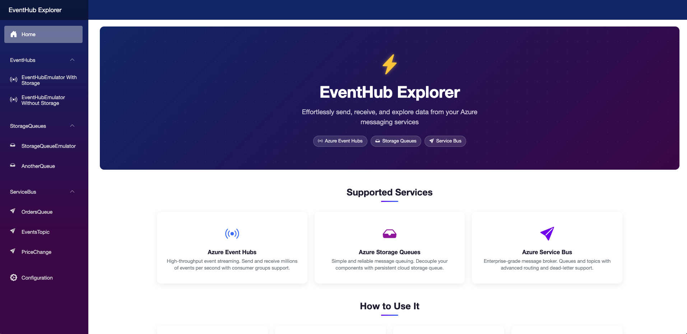
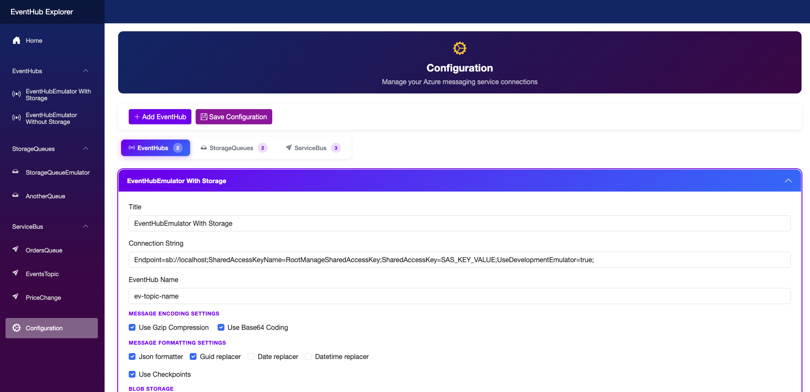
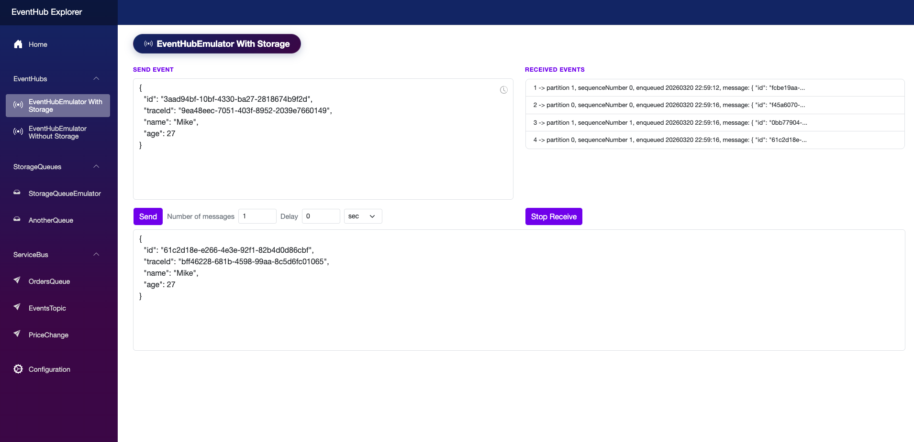

EventHub Explorer is a developer tool that allows you to interact with Azure Event Hubs, Azure Storage Queues and Azure Service Bus using a graphical user interface. It supports real Azure services, the eventhubs-emulator for Event Hubs, the Azurite for StorageQueue, and the Service Bus emulator for Service Bus.



Note: The application uses the $Default consumer group by default.
The Event Hubs emulator uses a static connection string. The host value depends on how your application is deployed relative to the emulator.
Application running natively on the same local machine as the emulator:
Endpoint=sb://localhost;SharedAccessKeyName=RootManageSharedAccessKey;SharedAccessKey=SAS_KEY_VALUE;UseDevelopmentEmulator=true;Application on a different machine on the same local network (use the IPv4 address of the machine running the emulator):
Endpoint=sb://192.168.x.y;SharedAccessKeyName=RootManageSharedAccessKey;SharedAccessKey=SAS_KEY_VALUE;UseDevelopmentEmulator=true;Application container on the same Docker bridge network (use the emulator container alias, default is eventhubs-emulator):
Endpoint=sb://eventhubs-emulator;SharedAccessKeyName=RootManageSharedAccessKey;SharedAccessKey=SAS_KEY_VALUE;UseDevelopmentEmulator=true;Application container on a different Docker bridge network:
Endpoint=sb://host.docker.internal;SharedAccessKeyName=RootManageSharedAccessKey;SharedAccessKey=SAS_KEY_VALUE;UseDevelopmentEmulator=true;Namespace-level connection string (access to all event hubs in the namespace):
Endpoint=sb://<NamespaceName>.servicebus.windows.net/;SharedAccessKeyName=<KeyName>;SharedAccessKey=<KeyValue>Event hub-level connection string (access to a specific event hub):
Endpoint=sb://<NamespaceName>.servicebus.windows.net/;SharedAccessKeyName=<KeyName>;SharedAccessKey=<KeyValue>;EntityPath=<EventHubName>The default well-known account for Azurite:
devstoreaccount1Eby8vdM02xNOcqFlqUwJPLlmEtlCDXJ1OUzFT50uSRZ6IFsuFq2UVErCz4I6tq/K1SZFPTOtr/KBHBeksoGMGw==Running locally (localhost):
DefaultEndpointsProtocol=http;AccountName=devstoreaccount1;AccountKey=Eby8vdM02xNOcqFlqUwJPLlmEtlCDXJ1OUzFT50uSRZ6IFsuFq2UVErCz4I6tq/K1SZFPTOtr/KBHBeksoGMGw==;BlobEndpoint=http://127.0.0.1:10000/devstoreaccount1;Running as a Docker container on the same bridge network (use the Azurite container service name, e.g. azurite):
DefaultEndpointsProtocol=http;AccountName=devstoreaccount1;AccountKey=Eby8vdM02xNOcqFlqUwJPLlmEtlCDXJ1OUzFT50uSRZ6IFsuFq2UVErCz4I6tq/K1SZFPTOtr/KBHBeksoGMGw==;BlobEndpoint=http://azurite:10000/devstoreaccount1;Shortcut (when running locally without Docker):
UseDevelopmentStorage=trueRunning locally (localhost):
DefaultEndpointsProtocol=http;AccountName=devstoreaccount1;AccountKey=Eby8vdM02xNOcqFlqUwJPLlmEtlCDXJ1OUzFT50uSRZ6IFsuFq2UVErCz4I6tq/K1SZFPTOtr/KBHBeksoGMGw==;QueueEndpoint=http://127.0.0.1:10001/devstoreaccount1;Running as a Docker container on the same bridge network (use the Azurite container service name, e.g. azurite):
DefaultEndpointsProtocol=http;AccountName=devstoreaccount1;AccountKey=Eby8vdM02xNOcqFlqUwJPLlmEtlCDXJ1OUzFT50uSRZ6IFsuFq2UVErCz4I6tq/K1SZFPTOtr/KBHBeksoGMGw==;QueueEndpoint=http://azurite:10001/devstoreaccount1;DefaultEndpointsProtocol=https;AccountName=<AccountName>;AccountKey=<AccountKey>;QueueEndpoint=https://<AccountName>.queue.core.windows.net;The Service Bus emulator uses a static connection string. The host value depends on how your application is deployed relative to the emulator.
Application running natively on the same local machine as the emulator:
Endpoint=sb://localhost;SharedAccessKeyName=RootManageSharedAccessKey;SharedAccessKey=SAS_KEY_VALUE;UseDevelopmentEmulator=true;Application on a different machine on the same local network (use the IPv4 address of the machine running the emulator):
Endpoint=sb://192.168.x.y;SharedAccessKeyName=RootManageSharedAccessKey;SharedAccessKey=SAS_KEY_VALUE;UseDevelopmentEmulator=true;Application container on the same Docker bridge network (use the emulator container alias, default is servicebus-emulator):
Endpoint=sb://servicebus-emulator;SharedAccessKeyName=RootManageSharedAccessKey;SharedAccessKey=SAS_KEY_VALUE;UseDevelopmentEmulator=true;Application container on a different Docker bridge network:
Endpoint=sb://host.docker.internal;SharedAccessKeyName=RootManageSharedAccessKey;SharedAccessKey=SAS_KEY_VALUE;UseDevelopmentEmulator=true;Note: For management operations (creating/deleting entities via the Administration Client), append port 5300 to the connection string. Example for local machine:
Endpoint=sb://localhost:5300;SharedAccessKeyName=RootManageSharedAccessKey;SharedAccessKey=SAS_KEY_VALUE;UseDevelopmentEmulator=true;Namespace-level connection string:
Endpoint=sb://<NamespaceName>.servicebus.windows.net/;SharedAccessKeyName=<KeyName>;SharedAccessKey=<KeyValue>* — the service you want to use
http://localhost:5235/docker pull dvlaskin/eventhubexplorer, open in browser http://localhost:5235/services:
eventhubexplorer:
image: dvlaskin/eventhubexplorer:latest
container_name: eventhubexplorer
ports:
- "5235:8080"
volumes:
- data-volume:/app/Data
networks:
- docker-network
volumes:
data-volume:
networks:
docker-network:
external: true
MIT